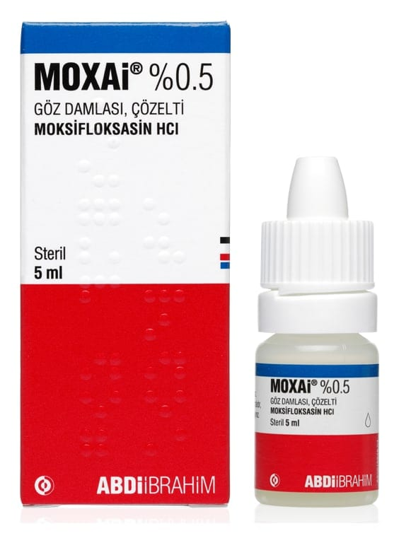

Moxai %0.5 Göz Damlası, Çözelti, 5 ml

Ne için kullanılır
KT · Bölüm 1MOXAİ®, berrak yeşilimsi, sarı renkli bir çözeltidir.
MOXAİ®, etkin madde olarak 5 mg moksifloksasin baza eşdeğer 5.45 mg moksifloksasin hidroklorür içerir. Koruyucu içermez.
Farmakoterapötik grup: oftalmolojikler, anti-infektifler
Her bir ambalajda şeffaf LDPE (düşük yoğunluklu polietilen) bir şişe bulunur.
MOXAİ®, florokinolon sınıfından bir antibiyotik olan ve göz infeksiyonlarının tedavisinde kullanılan moksifloksasini içerir.
MOXAİ®, gözün ön oküler bölümünde moksifloksasine hassas suşların sebep olduğu bakteriyel infeksiyonların topikal tedavisinde kullanılır.